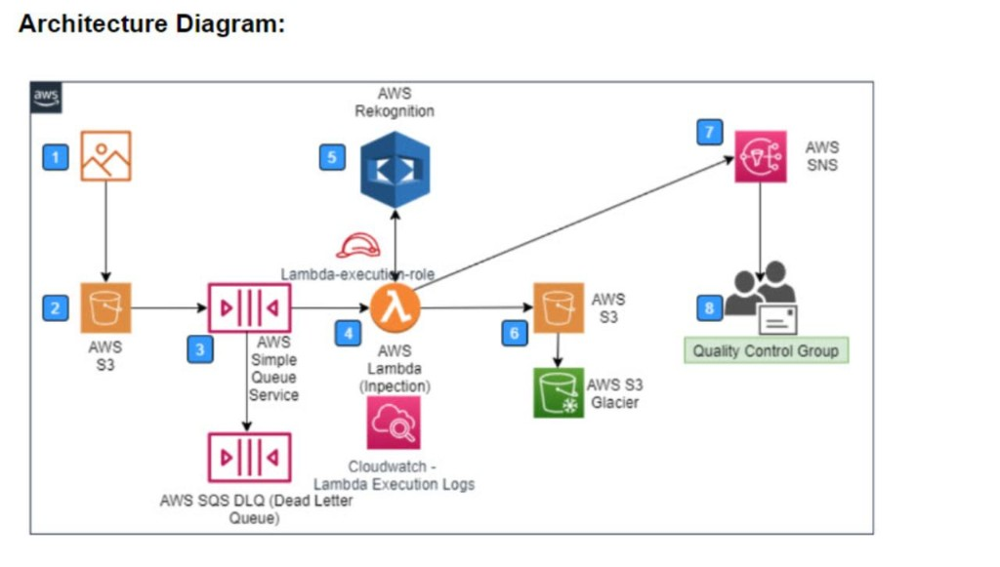
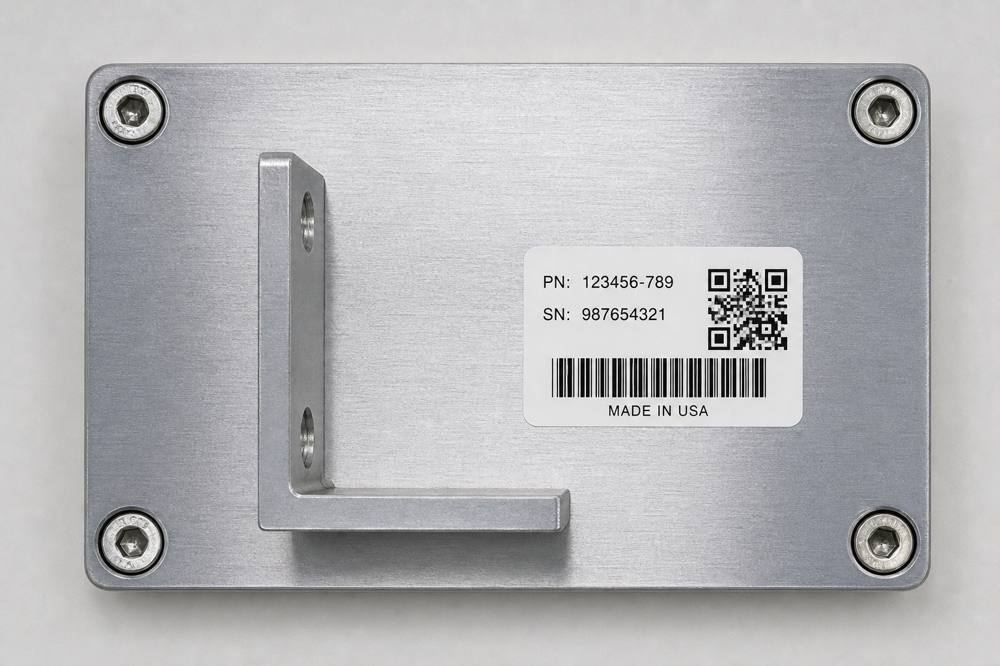
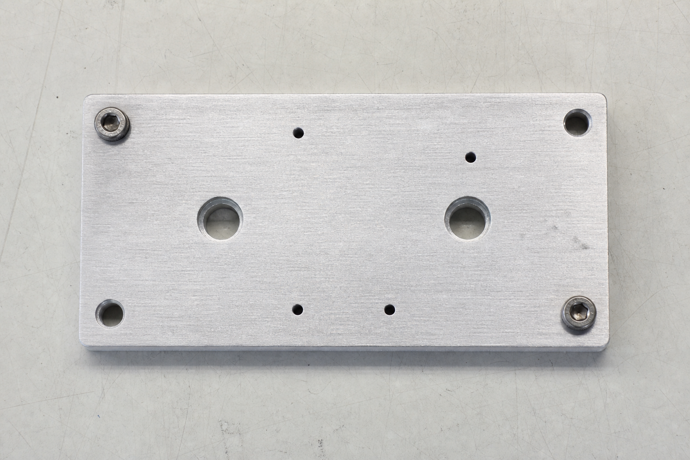

Automating Company X's manual widget quality inspection
Team project · ITC6450 · AWS Academy Learner Lab
Company X inspects widgets manually today:
Goal: fully automate this — serverless and event-driven.

S3 (upload) → SQS (+DLQ) → Lambda → Rekognition → S3 archive (Glacier) + SNS → QC group. CloudWatch monitors every step.
| Component | Role |
|---|---|
| S3 (source) | Event source: camera drops the image here |
| SQS + DLQ | Decouples & buffers; failed images go to the DLQ |
| Lambda | The "inspector" — runs only on demand |
| Rekognition | Detects components (the automated inspection) |
| S3 (inspected) + Glacier | Archive + 3-year compliance retention |
| SNS | Notifies the Quality Control group |
| CloudWatch | Monitoring/observability for support |
detected = rekognition.detect_labels(image) # e.g. hardware, qr code, text
missing = [c for c in EXPECTED_LABELS
if c not in detected_names]
status = "PASS" if not missing else "FAIL"EXPECTED_LABELS is configurable (no code change to retune)inspected/pass/ or inspected/fail/| Requirement | Met by |
|---|---|
| Fully automated | S3 event → SQS → Lambda, zero human steps |
| Serverless + best practice | S3 / SQS / Lambda / Rekognition / SNS / Glacier |
| Event-based from the image | S3 ObjectCreated triggers everything |
| Image recognition | Rekognition DetectLabels |
| Notify QC group | SNS topic + subscription |
| Store results + image | Inspected bucket, pass/fail folders |
| 3-year retention | S3 lifecycle → Glacier, expire at 1095 days |


Compliant (left): hardware + QR label | Defective (right): missing bracket, label, screws
A widget passes only if Rekognition finds all of hardware, qr code.
| Scenario | Detected (sample) | Result |
|---|---|---|
| Compliant: plate / PCB / enclosure / module (×4) | Hardware, QR Code | PASS |
| Motor gearbox (synonym) | Machine, Motor, QR Code | PASS |
| Hardware only (bracket / plate) | Bracket, Screw / Aluminium | FAIL |
| Hardware + text, no QR | Text, Business Card | FAIL |
| QR sticker only / label only | QR Code / Document | FAIL |
| Non-widget (apple, volleyball) | Fruit / Ball | FAIL |
Rule: hardware|machine|motor, qr code (| = synonyms). 5 PASS / 7 FAIL — each failure names the missing component. Insight: rule vocabulary must match emitted labels → use synonym groups (or Custom Labels in production).
InspectFlowAI: Lambda invocations/errors/duration, SQS queue depth, DLQ depthinspectflow-dlq-not-empty: fires when an image fails inspection repeatedly and lands in the DLQs3.amazonaws.com may send, scoped to our bucketLabRole)